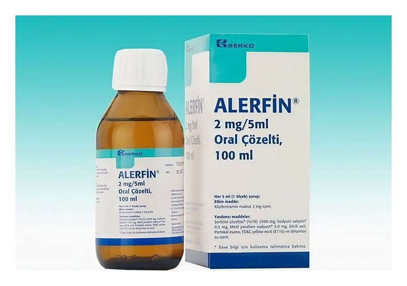

Alerfin 2 mg/5 ml Oral Çözelti, 1 Şişe

Ne için kullanılır
KT · Bölüm 1ALERFİN,
düşük dansiteli polietilen contalı pilfer-proof polipropilen kapak ile kapatılmış amber renkli cam şişede pazarlanmakta olan, 5 mililitresinde 2 mg klorfeniramin maleat içeren bir çözeltidir.
ALERFİN, mevsimsel alerjik rinit ile ilişkili semptomların giderilmesi ve ürtiker ve alerjik reaksiyonların tedavisinde kullanılır.